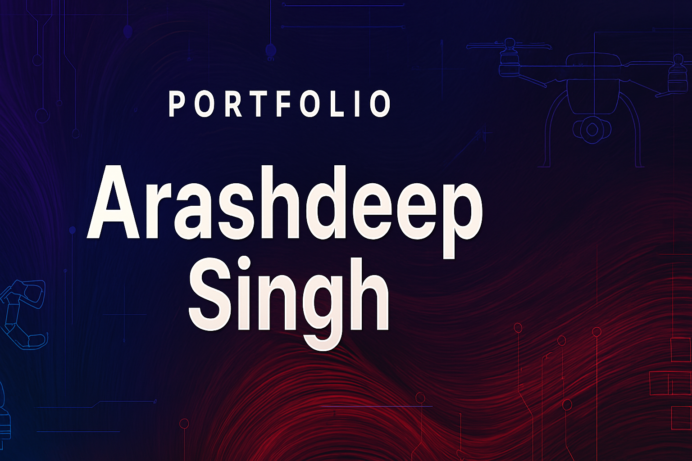

About Me
I'm Arashdeep Singh — a passionate Robotics Software Engineer and Simulation Developer dedicated to building intelligent, autonomous systems that bridge the gap between simulation and the real world.
My journey in robotics has evolved through designing and simulating complex systems like Autonomous Surface Vehicles (ASVs) and Autonomous Underwater Vehicles (AUVs) featuring leader–follower control and obstacle avoidance capabilities. I specialize in developing and deploying control architectures in ROS2 environments, integrating PID control, feedback linearization, and trajectory tracking for underactuated platforms.
Beyond control, I work extensively with Gazebo and NVIDIA Isaac Sim to create realistic robotic simulations and digital twins — modeling physics like buoyancy, center of gravity variation, and dynamic mass properties for amphibious and aerial robots. My aim is to make simulation-driven development more powerful, reliable, and close to hardware reality.
I'm equally driven by research and open-source contribution — working toward publishing innovative control and navigation strategies, contributing to ROS-based ecosystems, and continuously enhancing my understanding of AI/ML integration in robotics autonomy.
My long-term vision is to advance in robotics software and simulation engineering, pushing the boundaries of autonomy and collaborating with communities that shape the future of intelligent machines.
